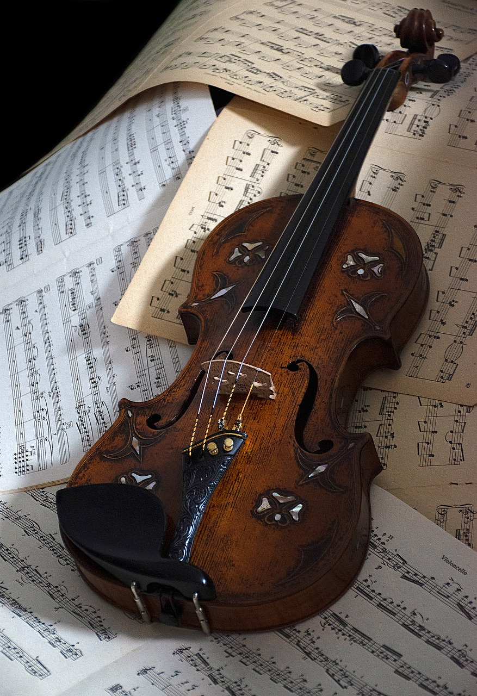

El violin es un instrumento de cuerda, de la familia de las cuerdas frotadas es el más pequeño y agudo entre los de su clase, que se compone de una caja de resonancia en forma de 8, un mástil sin trastes y cuatro cuerdas que se hacen sonar con un arco.

En los violines antiguos, las cuerdas eran de tripa. Hoy pueden ser también de metal o de tripa entorchada con aluminio, plata o acero; la cuerda en mi, la más aguda ―llamada cantino― es directamente un hilo de acero, y, ocasionalmente, de oro. En la actualidad se están fabricando cuerdas de materiales sintéticos que tienden a reunir la sonoridad lograda por la flexibilidad de la tripa y la resistencia de los metales.Además del efecto logrado por el arco sobre las cuerdas, se pueden conseguir otros: pizzicato (pellizcando las cuerdas como en el arpa o la guitarra, pero con otra posición), trémolo (moviendo el arco arriba y abajo muy rápido), vibrato (oscilando ligeramente los dedos sobre las cuerdas), glissando (deslizando los dedos de una posición a otra), col legno (tocando con la parte de madera del arco), sul ponticello (tocando cerca del puente), sul tasto (tocando sobre el diapasón), etcétera.
Las partituras de música para violín usan siempre la clave de sol, llamada antiguamente «clave de violín».